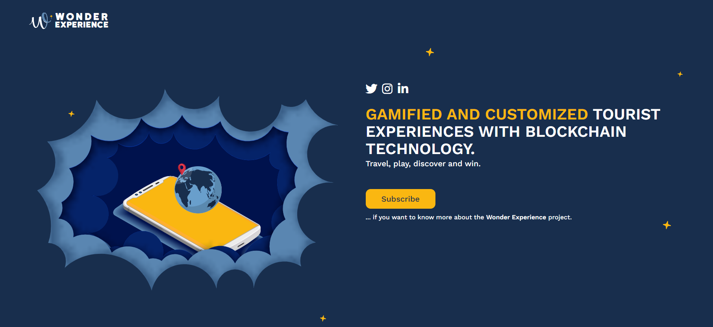
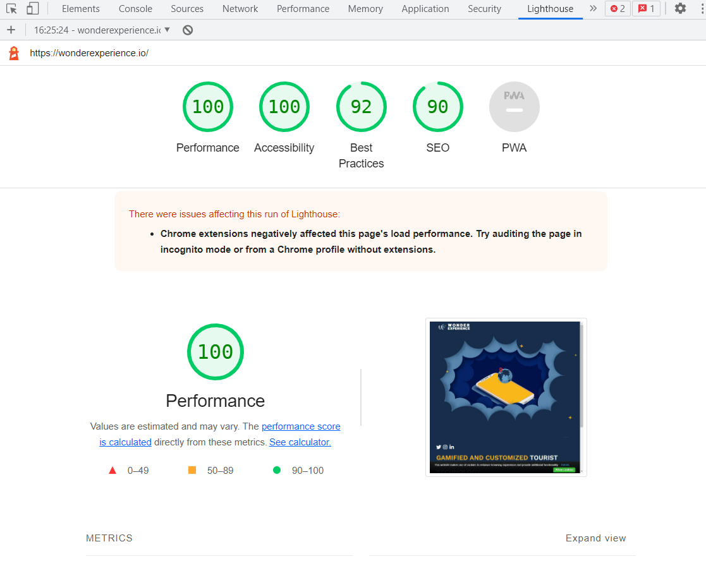

Wonder Experience es una startup, actualmente acelerada por Turislab, una entidad de la Xunta de Galicia. Wonder Experience se basa en ofrecer una aplicación turística con un enfoque de gamificación.
Mi papel principal en la startup es el de programador frontend. Y en este rol, el desarrollo de la página web principal es una de mis labores.
La página web está diseñada por la creativa digital y diseñadora UX Alicia Hernández.
Mis premisas a la hora de programar es cumplir fielmente con el diseño UX/UI, validar el código acorde a los estándares de W3C y cuidar aspectos que repercuten en la accesibilidad, la optimización y el SEO.
 Ir a la página web de Wonder Experience